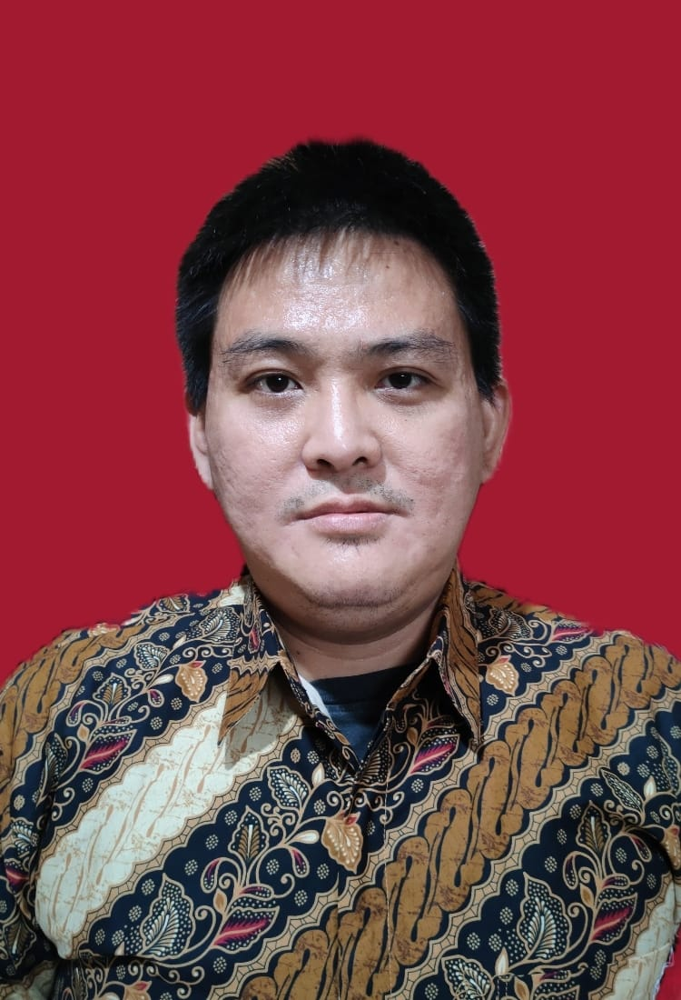

Curriculum Vitae Renaldy Adisetiawan

Personal Data:
Date of Birth : 16 June 1981
Nationality : Indonesian
Marital Status : Married
Sex : Male
Email : try2live@gmail.com
Phone : +628151830065
Summary:
Renaldy Adisetiawan is an experienced Technology Consultant and deployment engineering specializing in IT Infrastructure and cloud solutiuons.
Education :
- Bachelor Degree (S1) Bina Nusantara University, Jakarta
- Major in Industrial Engineering and Computer Science
- GPA is 3.08 on scale of 4.0 Technical Qualification
Technical Skill and Experience :
- 15 Years HPE Product Technologies and Troubleshooting
- 10 Years VMware Technologies
- 10 Years RedHat Administration
Certification :
- October 2025, RedHat Certified Openshift Virtualization
- April 2025, RedHat Certified Openshift Administrator
- February 2024. AWS Certified Cloud Practioner Renew
- October 2023, Microsoft Azure Fundamental
- July 2023, Morpheus System Administrator
- February 2023, VCP DCV 2023